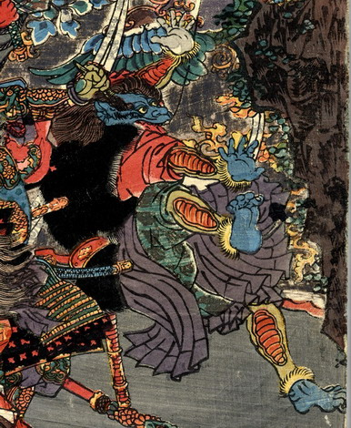

青い鬼。武装している。頭頂の一角を武者に握られ、慌てふためいている。
著作者：一寿斎国政（歌川国政）／出典：親書誌：U426_nichibunken_0231：四天王大江山入之圖；シテンノウオオエヤマノズ／日付：2010／資源識別子：U426_nichibunken_0231_0002_0000
Copyright (c)2010- International Research Center for Japanese Studies, Kyoto, Japan. All rights reserved.